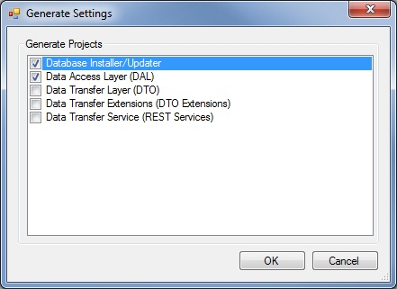
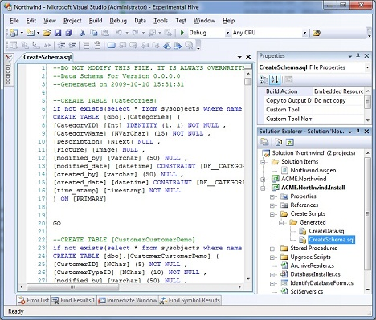
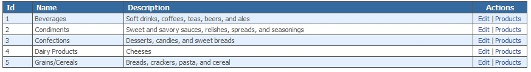

Title: NHydate Step-by-Step Author: Chris Davis Email: chrisd@gravitybox.com Member ID: 220760 Language: C# 3.5 Platform: Windows, .NET 3.5 Technology: ASP.NET, C#, Code Generation Level: Intermediate, Advanced Description: Step-by-Step example using the NHydrate platform Section Platforms, Frameworks & Libraries SubSection .NET Framework License: Ms-PL
This is a step-by-step example of how to use the NHydrate generator. This document will cover how to import and create a model, generate code, and incorporate this into an application. There are many features not covered by this document as well as other NHydrate projects we will not use. This example covers how to use a data access layer and database installer to get a working application up and running.
When starting a NHydrate project, you can import a model from an existing SQL Server database or create one from scratch. We will import a model for simplicity. Importing allows you to get a working model very quickly. We will import the Northwind database.
In VS.NET create a blank solution. After you have a solution, right-click in the project explorer and choose "Add New Item" from the context menu. Choose the text file template and name it anything but change the extension to WSGEN. This will create a blank model in your solution and open it in the NHydrate designer.
Now click on the model and you will see a properties window. For this example, we will change the company name to Acme and the project and database name to TestProj. These settings will be used to create your projects and corresponding assemblies.
On the Tools menu you will three new menus: Generate, Import, and Verify. Choose Import and enter the database connection information to the Northwind database. When complete you will have a model based on this database.
Now for the sake of consistency, code beauty and best practice, we will change the names of the tables and columns. The generator engine uses the names to create objects, properties, methods, etc of course. To make pretty Pascal names in code, we need to format the name in a certain fashion. Since this is an existing database, we will not rename the actual tables and columns but add code facades to them. The database already exists and has data in it so we will map our code to differently named objects for ease of use in our C# code.
In the model designer, select the "Tables" node in the tree and right-click. Choose the "Update Table Codefacades" menu option. This will display an options screen. Use the default settings and press OK. You will notice that the grid of tables displayed now has the code façade column populated. Some tables are singular and some plural. It is recommended as a best practice to make all tables singular. This is because in code objects have a suffix of "Item" and groups of objects are named with "Collection" or "List". We need to go to each table and manually change the name to singular. For example, change "Shippers" to "Shipper". Now select the Tables node in the tree again, right-click and choose the "Update Column CodeFacades" menu option. Again an options screen is displayed. Use the default settings and press OK. This will add a code façade to all columns. It will format column names like "CustomerID" to "customer_id". The generator uses the underscore to build Pascal names in code like "CustomerId". Now your code will be easy to read. Keep in mind we are only using code facades because this is an existing database. If we were starting from scratch, it would be best practice simply to name the columns with names formatted in this fashion. The façade functionality allows you to map a database field to a different name in code.
Now that all of the table and column names have been formatted properly, we can generate the code. On the Tools menu select the "Generate" menu and watch the generation. You will be prompted for the projects to generate. We only need the database installer and the data access layer (DAL). Choose these two options and then press OK.

Since NHydrate is integrated in to the VS.NET environment, all projects and files will be added directly to the solution. You will see two new projects and many files added to the project explorer. You should be able to build with no problems. That is it! You have a generated framework that you can use in an application.
There were two projects added to the solutions. The first is "ACME.Northwind.Install". The name is based on the company name, project name, and then install. The second project is the "ACME.Northwind". This is the DAL layer.
First let us address the database installer. This project can be run directly from the environment with the .NET install utility. To setup this functionality, right-click on the install project and select the properties menu. Next click the Debug tab. Check the "Start External Program" radio button and choose the install utility provided with the .Net framework. On my machine it was located at "C:\Windows\Microsoft.NET\Framework\v2.0.50727\InstallUtil.exe". In the command line arguments box enter the compiled assembly’s name "ACME.Northwind.Install.dll". You can now run the project by pressing F5 or right clicking on the project and selecting Debug|Start New Instance.
Before we run the installer we need to understand what it is doing. It will run any generated scripts and then compile the needed stored procedures on the database. One of the generated scripts is CreateSchema.sql. This file creates all the tables, indexes, relationships, etc on the database.

Since Northwind is an existing database, it already has relations and indexes; we need to clean the database a little before we run the update scripts. NHydrate manages all of your tables, relations, indexes, triggers, etc and gives each a strong name. We will remove all existing indexes and defaults so the schema script will add them back with strong names. This is not necessary if you allow the NHydrate platform to build your database from scratch, but is necessary otherwise.
In the generated script stub file in the folder "Upgrade Scripts\Generated", we need to add the following script to remove these objects. This file will be run because the schema file.
--DROP ALL INDEXES
declare @schema nvarchar(128), @tbl nvarchar(128), @constraint nvarchar(128)
DECLARE @sql nvarchar(255)
declare cur cursor fast_forward for
select distinct cu.constraint_schema, cu.table_name, cu.constraint_name
from information_schema.table_constraints tc
join information_schema.referential_constraints rc on rc.unique_constraint_name = tc.constraint_name
join information_schema.constraint_column_usage cu on cu.constraint_name = rc.constraint_name
--where tc.constraint_catalog = @database and tc.table_name = @table
open cur
fetch next from cur into @schema, @tbl, @constraint
while @@fetch_status <> -1
begin
select @sql = 'ALTER TABLE [' + @schema + '].[' + @tbl + '] DROP CONSTRAINT [' + @constraint + ']'
exec sp_executesql @sql
fetch next from cur into @schema, @tbl, @constraint
end
close cur
deallocate cur
GO
--DROP ALL DEFAULTS
declare @name nvarchar(128), @parent nvarchar(128)
DECLARE @sql nvarchar(255)
declare cur cursor fast_forward for
select so.[name], sop.[name] as [parentname] from sysobjects so inner join sysobjects sop on so.parent_obj = sop.id where so.xtype = 'D'
open cur
fetch next from cur into @name, @parent
while @@fetch_status <> -1
begin
select @sql = 'ALTER TABLE [' + @parent + '] DROP CONSTRAINT [' + @name + ']'
exec sp_executesql @sql
fetch next from cur into @name, @parent
end
close cur
deallocate cur
GO
We can now run the installer project and the Northwind database will be updated appropriately. The stored procedures are necessary for the DAL to manipulate data. The entire CRUD layer is handled through these stored procedures. There is no need for you ever to modify or even look at the scripts. In fact you should never modify them because they are regenerated each time you change and regenerate the model.
We now have an entire DAL layer and we are ready to build an application on top of it. In the solution, create a new web application named "Northwind.Test". This will create a web project with a default page and a configuration file. The provided example has a master page with all other pages deriving from it with a particular style sheet. You can get this code from the sample. Suffice it to say this not important to our example as it only dictates the look-and-feel. I assume that you already have the look-and-feel you want for the project.
FirsFirst open the web.config file and add the following entry in the AppSettings section. Please do change the connection string if it is different on your machine.
Add a Global.asax file to the project and add the following code to the Application_Start handler.
ACME.Northwind.Business.ConfigurationValues.GetInstance().ConnectionString = ConfigurationManager.AppSettings["ConnectionString"];
This will setup the connection string from this application by reading the web.config file and setting the configuration object of the generated data access layer.
We will start with a simple page that lists Categories. We first create a new page named "CategoryList.aspx". Add a grid to it. We will now setup the bound columns.
<asp:GridView ID="grdItem" runat="server" AllowPaging="false" AllowSorting="false" AutoGenerateColumns="false" Width="100%" CssClass="grid" RowStyle-CssClass="gridrownormal" AlternatingRowStyle-CssClass="gridrowalternate" HeaderStyle-CssClass="gridheader" EmptyDataText="There are currently no items" EmptyDataRowStyle-CssClass="emptygrid" > <Columns> <asp:BoundField DataField="CategoryId" HeaderText="Id" /> <asp:BoundField DataField="CategoryName" HeaderText="Name" /> <asp:BoundField DataField="Description" HeaderText="Description" /> <asp:TemplateField HeaderText="Actions" ItemStyle-CssClass="showtoptext" ItemStyle-HorizontalAlign="Center" HeaderStyle-HorizontalAlign="Center" ItemStyle-Width="80"> <ItemTemplate> <asp:HyperLink ID="linkEdit" runat="server" Text="Edit" /> | <asp:HyperLink ID="linkProducts" runat="server" Text="Products" /> </ItemTemplate> </asp:TemplateField> </Columns> </asp:GridView>
In the provided example, there is also a custom paging control but this is beyond the scope of this exercise. You can use the paging control from the provided example code if you wish.
Now that we have a grid on screen we need to bind it. In our code behind, we simply load all categories with no filtering. The syntax is LINQ with a where predicate. The predicate is simply "true" because we want all records.
CategoryPaging paging = new CategoryPaging(
this.PagingControl1.PageIndex,
this.PagingControl1.RecordsPerPage,
Category.FieldNameConstants.CategoryId,
true);
CategoryCollection categoryCollection =
CategoryCollection.RunSelect(x => true, paging);
this.PagingControl1.ItemCount = paging.RecordCount;
grdItem.DataSource = categoryCollection;
grdItem.DataBind();
If did not want to perform any paging and had no filters, the code would be even simpler.
grdItem.DataSource = CategoryCollection.RunSelect();
grdItem.DataBind();
There is a little more code we need to add to make this screen complete. Notice that in the grid markup there are two links in the last column: Edit and Products. The edit link will take the user to a page to edit exactly one Category item. The Products link will take the user to a list of products related to the specific category. In the OnInit event of the page, we need to hook the RowDataBound event of the grid and then handle the event.
protected override void OnInit(EventArgs e)
{
base.OnInit(e);
grdItem.RowDataBound +=
new GridViewRowEventHandler(grdItem_RowDataBound);
}
private void grdItem_RowDataBound(object sender, GridViewRowEventArgs e)
{
if (e.Row.RowType == DataControlRowType.DataRow)
{
Category category = (Category)e.Row.DataItem;
HyperLink linkEdit = (HyperLink)e.Row.FindControl("linkEdit");
HyperLink linkProducts =
(HyperLink)e.Row.FindControl("linkProducts");
linkEdit.NavigateUrl =
"/CategoryItem.aspx?id=" + category.CategoryId;
linkProducts.NavigateUrl =
"/ProductList.aspx?categoryid=" + category.CategoryId;
}
}
Notice that I am simply creating URLs that will navigate to another page when these links are clicked. The corresponding pages know how to handle the request. When we run the page we get a grid that looks like this. The first three columns are bound and the links are handled in code.

Now if the user clicks on the edit button, he is taken to the new URL which is a detail page for exactly one category. To create this page, add a new page to your project named "CategoryItem.aspx". Add two text boxes for name and description. Also add two buttons: save and cancel. The primary key, category ID, is passed in on the URL so we parse this to get the ID and initialize the page.
private void Populate()
{
int categoryId;
if (!int.TryParse(this.Request["id"], out categoryId) return;
Category category = Category.SelectUsingPK(categoryId);
if (category == null) return;
txtName.Text = category.CategoryName;
txtDescription.Text = category.Description;
}
If the user changes any data on the screen, we want to save these changes back to the database. In the event handler for the save button, we will load the category object, set its properties, and save it.
private void cmdSave_Click(object sender, EventArgs e)
{
int categoryId;
if (!int.TryParse(this.Request["id"], out categoryId) return;
Category category = Category.SelectUsingPK(categoryId);
category.CategoryName = txtName.Text;
category.Description = txtDescription.Text;
category.Persist();
}
This pattern for list and detail pages can be extended across the entire web application. The example has a list and detail for customers, employees, suppliers, etc. Some of the screens show a little more advanced way of loading data as well. The results are all paged so they can be used to display and page through arbitrarily large sets of objects. Notice that we never need to write SQL. In fact we do not even need to know the specifics of the relationships.
A category can be associated with many products. Or conversely many products can be associated with a single category. This is the standard one-to-many relationship. I as a developer do not care how the relationship is constructed. Which columns or how many columns the relation contains is not my concern. I only care to walk the relationship and load other objects. In the category list above, each grid row has a "Products" link. When a user clicks this link, he expects to see a list of products for the specified category. To see this functionality in action, let us look at the products list page. The grid is almost identical to the category page with the exception that the bound fields are appropriate to the Product object. However the load code is different. There is no filtering on the category list screen but the product list screen can load all objects or just those for a specific category. We must write our product load code to reflect these business cases.
private void Populate()
{
ProductPaging paging = new ProductPaging(this.PagingControl1.PageIndex,
this.PagingControl1.RecordsPerPage,
Product.FieldNameConstants.ProductId, true);
ProductCollection productCollection = null;
if (this.Request["categoryId"] != null)
{
//Load Products for specifc category
int categoryId;
if (!int.TryParse(this.Request["id"], out categoryId) return;
productCollection = ProductCollection.RunSelect(x =>
x.CategoryId == categoryId, paging);
}
else
{
//Load All Products
productCollection = ProductCollection.RunSelect(x => true,
paging);
}
grdItem.DataSource = productCollection;
grdItem.DataBind();
}
Notice that there are now two load branches. If the URL contains a "categoryid" parameter, then we parse it to get the id and load the product collection where the associated product table’s categoryid property matches the passed in value. If is no such parameter on the query string, we simply load all products.
The NHydrate generator makes accessing your database in an object-oriented fashion quite easy. As we saw in this example, you can load and save data in one line of code. You can write LINQ expressions to load data in a strongly-typed query mechanism. Unlike writing inline SQL, you will always get a compile-time check if you change your model. If fields are removed or names changed, the compiler will inform you of where the mistakes are located. This is not something that be done with loosely-typed objects and inline SQL. Using this tool allows you to create applications with very little code, because all of the grunt work is being done in the generated layer.
I have been using this framework for many years and I am very happy with it. I have been able to accomplish so much more than developers who do not use it simply because it makes me more efficient. When writing UI, I only concentrate on the UI not the intricacies of database CRUD. I hope that you find this framework as useful as I do.
For more information see the NHydrate site at the following URL. NHydrate Site
Parent Site: Widgetsphere Software
Info on faceted navigation: Celeriq.com